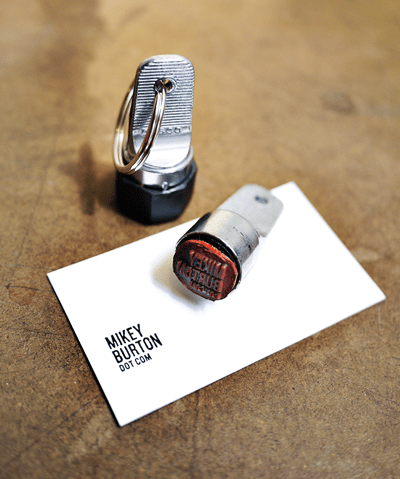

Portishead - The Rip
Отличный трек!
Отличный трек!

Ой, какой классный альбом! А какой у этого чувака из Sigur Rós голос!

Клевые какие личные печати :)

У айфона самая шизанутая проверка правописания, которую я когда-либо видел. Мало того, что она окончания меняет, так еще и пробелы вставляет умунипостижимымобразом, блять! :)
Ну и анплаггед версия :)

Никогда я особенно не любил мерсы, но вот эта серия меня очень впирает. Хорошо сделали.
У мну на голове волосы опять короче, чем ресницы :)))

Блядь, это же Девид Финчер!!!
Ох, здорово как!
Привожу сегодня мелкого в садег, стоим у домофона, я его спрашиваю:
— Тима, говорить будешь?
— Да.
— Говори!
И он выдает: — Тима и папа.
Вошли, а там все ржут :)